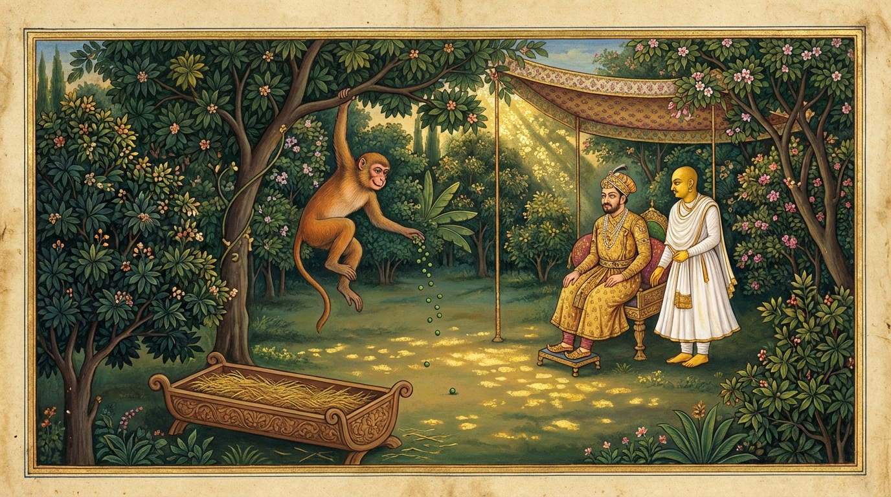

6. කළායමුට්ඨි ජාතකය (176)
“බාලො වතායං සාඛගොචරො” (අතුපතර හැසිරෙන මේ සත්වයා ඒකාන්තයෙන්ම බාලයෙකි) යන මේ දේශනාව බුදුරජාණන් වහන්සේ දෙව්රම් වෙහෙරෙහි වැඩවාසය කරන සමයේ කොසොල් රජතුමා අරබයා දේශනා කළ සේක. එක් වැසි කාලයක පසේනදී කොසොල් මහරජතුමාගේ පසල් දනව්වක කැළඹීමක් ඇති විය. එහි සිටි ආරක්ෂක භටයෝ දෙතුන් වරක් යුද්ධ කළත් කැරලිකරුවන් මැඩපැවැත්වීමට නොහැකිව රජතුමාට හසුනක් යැවූහ. රජතුමා නොකල්හි, වැස්ස පවතිද්දීම නික්මී දෙව්රම් වෙහෙර සමීපයෙහි කඳවුරු බැඳ මෙසේ සිතුවේය: “මා මේ නික්මුණේ නොකල්හි ය. දියකදුරු ආදියෙහි දිය පිරී ඇති බැවින් මාර්ගය දුෂ්කරය. මා පළමුව බුදුරජාණන් වහන්සේ වෙත එළඹෙන්නෙමි. උන්වහන්සේ ‘මහරජතුමනි! කොහි යන්නෙහිදැ?’යි මගෙන් විමසන සේක. එවිට මම මේ කාරණය කියන්නෙමි. බුදුරජාණන් වහන්සේ වනාහි පරලොව අභිවෘද්ධිය සඳහා පමණක් නොව මෙළොව අභිවෘද්ධිය සඳහාද මට අනුග්රහ දක්වන සේක. ඒ නිසා ඉදින් මාගේ ගමනෙන් අවැඩක් වන්නේ නම් ‘මහරජ! මෙය අකාලය’ යැයි කියන සේක. ඉදින් වැඩක් වන්නේ නම් නිහඬ වන සේක.” රජතුමා දෙව්රමට ගොස් ශාස්තෲන් වහන්සේට වැඳ එකත්පසෙක හිඳගත්තේය. බුදුරජාණන් වහන්සේ, “මහරජ! ඔබ කොහි සිට මේ මහ දවල් පැමිණියෙහිදැ?”යි විමසූ සේක. “ස්වාමීනි! මම පසල් දනව්වක කැළඹීමක් සංසිඳුවන්නට යන අතරතුර ඔබවහන්සේට වැඳ නමස්කාර කොට යන්නට ආවෙමි”යි හෙතෙම කීය. එවිට උන්වහන්සේ, “මහරජ! පෙරත් රජවරු සේනා සමග යුද්ධයට යන විට නුවණැත්තන්ගේ බස් අසා නොකල්හි ගමන් නොගියාහුය”යි වදාරා ඔහු විසින් අයදින ලද්දාහු අතීත කථාව ගෙනහැර පෑ සේක.
පෙර බරණැස් නුවර බ්රහ්මදත්ත රජු රාජ්ය කරන සමයෙහි බෝධිසත්ත්වයන් වහන්සේ රජුට අර්ථයෙන් ධර්මයෙන් අනුශාසනා කරන සර්වකෘත්යයෙහි නියුක්ත ඇමතිවරයා වූ සේක. ඉක්බිති රජුගේ පසල් දනව්වක් කිපුණු (කැරලි ගැසූ) කල්හි ප්රත්යන්ත යෝධයෝ රජුට හසුන්පත් යැවූහ. රජතුමා වැසි සමයේ නික්මී උයනෙහි කඳවුරු බැන්දේය. බෝසතාණන් වහන්සේ රජු සමීපයේ සිටි සේක. ඒ අවස්ථාවෙහි අශ්වයන්ට කළු මෑ ඇට තම්බා ගෙනවුත් ඔරුවක දැමූහ. උයනෙහි සිටි වඳුරන් අතුරෙන් එක් වඳුරෙක් ගසින් බැස, එයින් මෑ ඇට ගෙන මුව පුරවාගෙන අත්වලිනුත් ගෙන උඩ පැන ගසෙහි හිඳ කන්නට පටන් ගත්තේය. ඉක්බිති කමින් සිටි මොහුගේ අතින් එක් මෑ ඇටයක් බිම වැටුණේය. වඳුරා කටින් ද අත්වලින් ද ගන්නා ලද සියලු මෑ ඇට ඉවත විසිකර, ගසින් බැස ඒ මෑ ඇටයම සොයන්නේ, එය නොදැකම නැවත ගසට නැගී දහසක් පැරදුණු අයෙකු මෙන් සෝක කරමින් දුර්මුඛව ගසේ අත්තෙහි හිඳ ගත්තේය. රජතුමා වඳුරාගේ ක්රියාව දැක බෝධිසත්ත්වයන් වහන්සේ අමතා, “මිත්රය! වඳුරා විසින් මේ කළේ කුමක්දැ?”යි විචාළේය. බෝධිසත්ත්වයන් වහන්සේ, “මහරජ! බුද්ධිය අඩු බාලයෝ බොහෝ දේ ගැන නොබලා අල්ප දේ ගැන බලා මෙබඳු දේ කරන්නෝ ය”යි කියා පළමු ගාථාව වදාළ සේක.

“ජන නායකයාණෙනි! ගස් අතුවල හැසිරෙන මේ වඳුරා ඒකාන්තයෙන්ම මෝඩයෙකි. මොහුට නුවණ නැත. කළු මෑ ඇට මිටම බිම හෙළා, බිම වැටුණු එකම මෑ ඇටය සොයයි.”
එහි දුමසාඛ ගොචරො යනු වඳුරාය. ඌ වනාහි ගස්වල අතුවල ඇති දේ ආහාරයට ගනියි; මොහුගේ ආහාර ඇත්තේත්, සැරිසරන තැන් වන්නේත් ගස්වල අතුය. ඒ නිසා ‘දුමසාඛ ගෝචර’ යයි කියනු ලැබේ. ජනින්ද යනු රජුට අමතයි. රජතුමා වනාහි පරම ඉසුරු බැවින් ජනයාගේ අධිපතියා (ඉන්ද්රයා) වන නිසා ‘ජනින්ද’ නම් වේ. කළාය මුට්ඨිං අවකිරිය යනු මෑ ඇට මිට විසුරුවා හැරීමයි. කෙවලං යනු සියල්ලමයි. ගවෙසති යනු බිම වැටුණු එකම මෑ ඇටය සොයයි යන්නයි.
මෙසේ කියා නැවත බෝධිසත්ත්වයන් වහන්සේ රජු වෙත එළඹෙමින්, රජු අමතා දෙවන ගාථාව ද වදාළ සේක.
“මහරජ! එපරිද්දෙන්ම දැඩි ලෝභී වූ අපි ද, යම් වෙනත් කෙනෙක් වෙත් ද, ඒ සියල්ලෝම මෑ ඇට මිටින් පැරදුණු වඳුරා මෙන් (සුළු දෙයක් නිසා) බෙහෙවින් පිරිහෙමු.”
මෙහි සැකෙවින් අර්ථය මෙයයි: මහරජ! එසේම අපි ද අන්යයෝ ද යන ලෝභයෙන් මඩනා ලද සියලු ජනයා, අප්පෙන බහුං ජිය්යාම (ස්වල්පය නිසා බොහෝ දේ පරදින්නෙමු). අපි වනාහි දැන් මේ නොකල්හි, වැසි සමයේ දුෂ්කර මාර්ගයේ යමින් ස්වල්ප වූ ප්රයෝජනයක් සඳහා බොහෝ වූ අර්ථයන්ගෙන් පිරිහෙමු. කළායෙනෙව වානරො (මෑ ඇටයෙන් වඳුරා මෙන්) යනු, යම්සේ මේ වඳුරා එක් මෑ ඇටයක් සොයමින් ඒ එක් මෑ ඇටය නිසා සියලු මෑ ඇටවලින් පිරිහුණේ ද, එසේම අපි ද දියකදුරු ආදිය ජලයෙන් පිරුණු කල්හි, අකාලයේ යාමෙන් ස්වල්පමාත්ර වූ ප්රයෝජනයක් සොයමින් බොහෝ ඇත් වාහන, අස් වාහන මෙන්ම බලකායෙන් ද පිරිහෙන්නෙමු. ඒ නිසා නොකල්හි යන්නට නොවටින්නේ යැයි බෝධිසත්ත්වයෝ රජුට අවවාද දුන් සේක.
රජතුමා බෝධිසත්ත්වයන් වහන්සේගේ කථාව අසා එතැනින් නැවතී ආපසු බරණැස් නගරයටම පිවිසියේය. සොරු ද “රජතුමා සොරුන් මැඩලීම පිණිස නගරයෙන් නික්මුණේ ය”යි අසා පසල් දනව්වෙන් පලා ගියහ. (වර්තමාන කථාවෙහි) සොරු ද “කොසොල් රජ නික්මුණේ ය”යි අසා පලා ගියහ. කොසොල් රජ බුදුරජාණන් වහන්සේගේ ධර්ම දේශනාව අසා අසුනෙන් නැගිට වැඳ පැදකුණු කොට සැවැත් නුවරට පිවිසියේය.
බුදුරජාණන් වහන්සේ මේ ධර්ම දේශනාව ගෙනහැර දක්වා ජාතක කථාව පූර්වාපර සන්ධි ගළපා නිමවා වදාළ සේක. “එකල්හි රජතුමා වූයේ ආනන්ද ස්ථවිරයන් වහන්සේ ය. නුවණ ඇති ඇමතියා වූයේ මම ම වෙමි”යි වදාළ සේක.
හයවන කළායමුට්ඨි ජාතක වර්ණනාව යි.